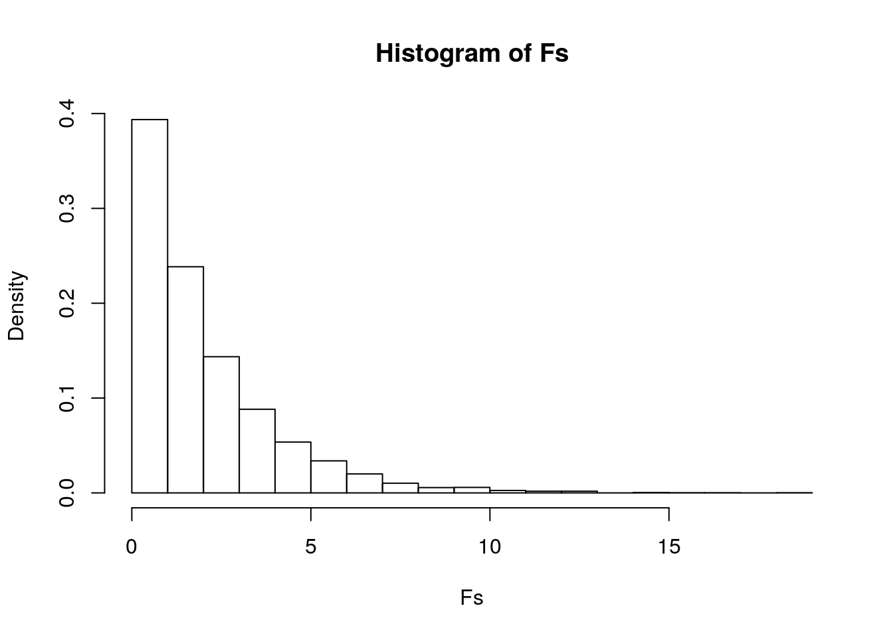
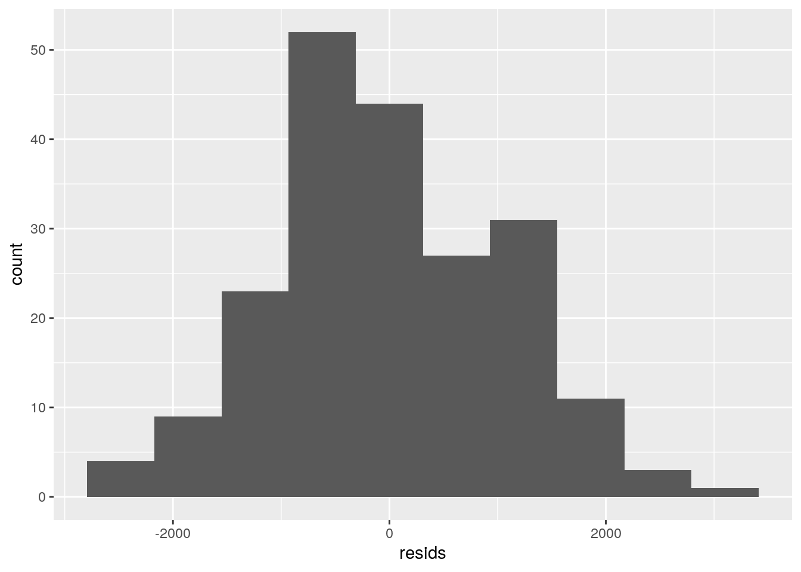

The dataset that I will be using for this project is the “melanoma” dataset from the ‘boot’ package. This dataset has measured some data on patients with malignant melanoma who had their tumors removed at the University Hospital of Odense, Denmark in the year 1962 and 1977. The variables in this dataset are thickness of tumor, presense of ulceration, survival time in days since the operation, status of condition, sex, and age at the time of the operation. There are 205 observations per variable. This dataset will be used to study the increased chance of death from melanoma based on the statistics taken.
library(boot)
library(readr)
library(dplyr)
library(tidyr)
library(tidyverse)
library(reshape2)
library(ggplot2)
library(lmtest)
data("melanoma")
mela <- melanoma %>% select(-year, -ulcer)
head(mela)## time status sex age thickness
## 1 10 3 1 76 6.76
## 2 30 3 1 56 0.65
## 3 35 2 1 41 1.34
## 4 99 3 0 71 2.90
## 5 185 1 1 52 12.08
## 6 204 1 1 28 4.84man1 <- manova(cbind(time, age, thickness) ~ status, data = mela)
summary(man1)## Df Pillai approx F num Df den Df Pr(>F)
## status 1 0.13719 10.653 3 201 1.571e-06 ***
## Residuals 203
## ---
## Signif. codes: 0 '***' 0.001 '**' 0.01 '*' 0.05 '.' 0.1 ' ' 1summary.aov(man1)## Response time :
## Df Sum Sq Mean Sq F value Pr(>F)
## status 1 25670731 25670731 22.543 3.878e-06 ***
## Residuals 203 231169377 1138765
## ---
## Signif. codes: 0 '***' 0.001 '**' 0.01 '*' 0.05 '.' 0.1 ' ' 1
##
## Response age :
## Df Sum Sq Mean Sq F value Pr(>F)
## status 1 14 14.45 0.0517 0.8203
## Residuals 203 56687 279.24
##
## Response thickness :
## Df Sum Sq Mean Sq F value Pr(>F)
## status 1 74.88 74.881 8.8801 0.003235 **
## Residuals 203 1711.80 8.433
## ---
## Signif. codes: 0 '***' 0.001 '**' 0.01 '*' 0.05 '.' 0.1 ' ' 1pairwise.t.test(mela$time, mela$status, p.adj = "none")##
## Pairwise comparisons using t tests with pooled SD
##
## data: mela$time and mela$status
##
## 1 2
## 2 < 2e-16 -
## 3 0.76 1.6e-06
##
## P value adjustment method: nonepairwise.t.test(mela$age, mela$status, p.adj = "none")##
## Pairwise comparisons using t tests with pooled SD
##
## data: mela$age and mela$status
##
## 1 2
## 2 0.04910 -
## 3 0.03637 0.00096
##
## P value adjustment method: nonepairwise.t.test(mela$thickness, mela$status, p.adj = "none")##
## Pairwise comparisons using t tests with pooled SD
##
## data: mela$thickness and mela$status
##
## 1 2
## 2 6.4e-06 -
## 3 0.481 0.064
##
## P value adjustment method: none# Probability of at least one type error
1 - 0.95^7## [1] 0.3016627# Bonferroni correction (1 manova, 3 anovas, 3 t-tests)
0.05/7## [1] 0.007142857By performing the MANOVA test with my numeric variables against ‘status’, we can see that the p-value is 0.000001571 which is well under 0.007. Therefore, the null hypothesis is rejected and it can be said that there is at least one of the time, age, and/or thickness variables has a group means that differs for status. To further see which variable differs, a univerate ANOVA was performed. This test showed that thickness and time both had p-values below 0.007 and therefore had at least one status mean that differs.
Poc hoc analysis was conducted to determine which status differed for the variables. Time and thickness differed significantly from each other in status after adjusting for multiple comparisons (bonferroni alpha= .05/7=0.007). The probability of at least one Type I error is 0.302.
There are many assumptions for MANOVA tests. These include random samples, independent observations, multivariate normality of variables, homogeneity of within-group covariance matrices, linear relationships among variables, no extreme outliers, and no multicollinearity. These assumptions are usually hard to meet in real world examples like the one of the “melanoma” dataset that is dealing with imperfect, real data which contains outliers, confounding varables, and scattered observations.
obs_F <- 22.543
Fs <- replicate(5000, {
new <- mela %>% mutate(time = sample(time))
SSW <- new %>% group_by(status) %>% summarize(SSW = sum((time -
mean(time))^2)) %>% summarize(sum(SSW)) %>% pull
SSB <- new %>% mutate(mean = mean(time)) %>% group_by(status) %>%
mutate(groupmean = mean(time)) %>% summarize(SSB = sum((mean -
groupmean)^2)) %>% summarize(sum(SSB)) %>% pull
(SSB/1)/(SSW/203)
})
hist(Fs, prob = T)
abline(v = obs_F, col = "red", add = T)
mean(Fs > obs_F)## [1] 0A permutation randomization test was then performed on the time variable and conditions from part 1. The null hypothesis is that all of the group means for the variable ‘time’ are equal when referring to status. The alternative hypothesis is that one of time has a status group that has differing group means. Upon performing the test, the p-value that was calculated was basically 0 which means that none of the 5000 F statistics generated were bigger than the F statistic of 22.543 which is exemplified by the histogram showing all of the Fs calculated. Therefore the null hypothesis can be rejected. This confirms what is found by using the MANOVA/ANOVA tests previously that ‘time’ has a status groups that has differing means.
mela$thickness_c <- mela$thickness - mean(mela$thickness)
mela$age_c <- mela$age - mean(mela$age)
m_fit <- lm(time ~ thickness_c * age_c, data = mela)
summary(m_fit)##
## Call:
## lm(formula = time ~ thickness_c * age_c, data = mela)
##
## Residuals:
## Min 1Q Median 3Q Max
## -2392.6 -586.7 -100.5 759.4 3191.8
##
## Coefficients:
## Estimate Std. Error t value Pr(>|t|)
## (Intercept) 2171.872 75.481 28.774 < 2e-16 ***
## thickness_c -55.816 27.572 -2.024 0.044255 *
## age_c -17.506 4.541 -3.855 0.000156 ***
## thickness_c:age_c -1.828 1.547 -1.182 0.238568
## ---
## Signif. codes: 0 '***' 0.001 '**' 0.01 '*' 0.05 '.' 0.1 ' ' 1
##
## Residual standard error: 1056 on 201 degrees of freedom
## Multiple R-squared: 0.1277, Adjusted R-squared: 0.1147
## F-statistic: 9.81 on 3 and 201 DF, p-value: 4.55e-06coef(lm(time ~ thickness_c * age_c, data = mela))## (Intercept) thickness_c age_c thickness_c:age_c
## 2171.872058 -55.815540 -17.505573 -1.828163mela %>% ggplot(aes(time, thickness_c * age_c)) + geom_point() +
geom_smooth(method = "lm", se = F)resids <- lm(time ~ thickness * age, data = mela)$residuals
# Normally distributed residuals - Do Kolmogorov-Smirnov test
# or SHapiro-Wilk (Ho-normal)
ks.test(resids, "pnorm", mean = 0, sd(resids))##
## One-sample Kolmogorov-Smirnov test
##
## data: resids
## D = 0.061857, p-value = 0.4128
## alternative hypothesis: two-sidedggplot() + geom_histogram(aes(resids), bins = 10)
# Equal variance of points/residuals along regression line
# (homoskedasticity) - plot residuals against y-hats (look
# for fanning out) or do a breuch-pagan test (Ho-homoske.)
# Linear relationship between X (interaction) amd Y
# (response) - eyeball it
library(sandwich)
library(lmtest)
bptest(m_fit)##
## studentized Breusch-Pagan test
##
## data: m_fit
## BP = 21.529, df = 3, p-value = 8.175e-05# Corrected robust SE
summary(m_fit)$coef[, 1:2]## Estimate Std. Error
## (Intercept) 2171.872058 75.481206
## thickness_c -55.815540 27.571823
## age_c -17.505573 4.541161
## thickness_c:age_c -1.828163 1.546558coeftest(m_fit, vcov = vcovHC(m_fit))##
## t test of coefficients:
##
## Estimate Std. Error t value Pr(>|t|)
## (Intercept) 2171.8721 80.8215 26.8725 < 2.2e-16 ***
## thickness_c -55.8155 35.0496 -1.5925 0.1128500
## age_c -17.5056 4.9482 -3.5378 0.0005011 ***
## thickness_c:age_c -1.8282 1.7829 -1.0254 0.3063997
## ---
## Signif. codes: 0 '***' 0.001 '**' 0.01 '*' 0.05 '.' 0.1 ' ' 1To observe the interaction between thickness and age on time, a linear regression was performed. The coefficients found explain that for every one additional millimeter in thickness, odds of survival time decreases by a factor of 55.8. For every additional year of age at the time of operation, the odds of survival time decreases by a factor of 17.506. The interaction of both increasing by a single unit, would have the survival time decreasing by a factor of 1.
The regression plot for this interaction is pictured above. To test the some assumptions of a regression, we used different tests and graphs. To test normality, a Kolmogorov-Smirnov test was ran and the results showed that the p-value was above 0.05 and therefore, we fail to reject the null hypothesis that the residuals are normally distributed. The linearity was confirmed by looking at the regression plot with shows the data points have a relationship that is somewhat linear between the interaction of thickness and age versus time. A breuch-pagan test was performed to test homoskedasticity and the results showed a p-value that was below 0.05. Therefore, the null hypothesis that there was equal variance of points along the regression line was rejected.
The data was then adjusted with robust standard errors. Correcting standard errors in this model is not very helpful for making the points more homoskedastic. The corrected standard errors increased a bit from the previous coefficient model. The model explains about 0.1277 of the variance in the outcome.
fit <- lm(time ~ thickness_c * age_c, data = mela)
resids <- fit$residuals
fitted <- fit$fitted.values
resid_resamp <- replicate(5000, {
new_resids <- sample(resids, replace = TRUE)
mela$new_y <- fitted + new_resids
fit <- lm(new_y ~ thickness_c * age_c, data = mela)
coef(fit)
})
resid_resamp %>% t %>% as.data.frame %>% gather %>% group_by(key) %>%
summarize(lower = quantile(value, 0.025), upper = quantile(value,
0.975))## # A tibble: 4 x 3
## key lower upper
## <chr> <dbl> <dbl>
## 1 (Intercept) 2021. 2320.
## 2 age_c -26.6 -8.54
## 3 thickness_c -108. -0.534
## 4 thickness_c:age_c -4.75 1.17coeftest(fit)[, 1:2]## Estimate Std. Error
## (Intercept) 2171.872058 75.481206
## thickness_c -55.815540 27.571823
## age_c -17.505573 4.541161
## thickness_c:age_c -1.828163 1.546558coeftest(fit, vcov = vcovHC(fit))[, 1:2]## Estimate Std. Error
## (Intercept) 2171.872058 80.821492
## thickness_c -55.815540 35.049617
## age_c -17.505573 4.948217
## thickness_c:age_c -1.828163 1.782851resid_resamp %>% t %>% as.data.frame %>% summarize_all(sd)## (Intercept) thickness_c age_c thickness_c:age_c
## 1 75.68634 27.29377 4.581939 1.528457The residuals were then bootstrapped in addition to the regression model. After bootstrapping, the standard errors of the residuals were even higher than they were in the original standard errors and robust standard errors. This also means that the p-value for the model after bootstrapping was smaller than those of the previous two standard error results.
class_diag <- function(probs, truth) {
tab <- table(factor(probs > 0.5, levels = c("FALSE", "TRUE")),
truth)
acc = sum(diag(tab))/sum(tab)
sens = tab[2, 2]/colSums(tab)[2]
spec = tab[1, 1]/colSums(tab)[1]
ppv = tab[2, 2]/rowSums(tab)[2]
if (is.numeric(truth) == FALSE & is.logical(truth) == FALSE)
truth <- as.numeric(truth) - 1
# CALCULATE EXACT AUC
ord <- order(probs, decreasing = TRUE)
probs <- probs[ord]
truth <- truth[ord]
TPR = cumsum(truth)/max(1, sum(truth))
FPR = cumsum(!truth)/max(1, sum(!truth))
dup <- c(probs[-1] >= probs[-length(probs)], FALSE)
TPR <- c(0, TPR[!dup], 1)
FPR <- c(0, FPR[!dup], 1)
n <- length(TPR)
auc <- sum(((TPR[-1] + TPR[-n])/2) * (FPR[-1] - FPR[-n]))
data.frame(acc, sens, spec, ppv, auc)
}
bc_fit <- glm(ulcer ~ thickness + age, data = melanoma, family = binomial(link = "logit"))
summary(bc_fit)##
## Call:
## glm(formula = ulcer ~ thickness + age, family = binomial(link = "logit"),
## data = melanoma)
##
## Deviance Residuals:
## Min 1Q Median 3Q Max
## -3.2250 -0.8396 -0.6914 1.0479 1.7663
##
## Coefficients:
## Estimate Std. Error z value Pr(>|z|)
## (Intercept) -1.708254 0.544589 -3.137 0.00171 **
## thickness 0.448208 0.087807 5.104 3.32e-07 ***
## age 0.004885 0.009687 0.504 0.61405
## ---
## Signif. codes: 0 '***' 0.001 '**' 0.01 '*' 0.05 '.' 0.1 ' ' 1
##
## (Dispersion parameter for binomial family taken to be 1)
##
## Null deviance: 281.13 on 204 degrees of freedom
## Residual deviance: 235.51 on 202 degrees of freedom
## AIC: 241.51
##
## Number of Fisher Scoring iterations: 5coeftest(bc_fit)##
## z test of coefficients:
##
## Estimate Std. Error z value Pr(>|z|)
## (Intercept) -1.7082538 0.5445886 -3.1368 0.001708 **
## thickness 0.4482084 0.0878074 5.1045 3.318e-07 ***
## age 0.0048853 0.0096873 0.5043 0.614051
## ---
## Signif. codes: 0 '***' 0.001 '**' 0.01 '*' 0.05 '.' 0.1 ' ' 1coef(lm(bc_fit))## (Intercept) thickness age
## 0.17578920 0.07001001 0.00112109prob <- predict(bc_fit, type = "response")
y <- ifelse(melanoma$ulcer == 1, 1, 0)
table(predict = as.numeric(prob > 0.5), truth = y) %>% addmargins## truth
## predict 0 1 Sum
## 0 102 37 139
## 1 13 53 66
## Sum 115 90 205(102 + 53)/205 #accuracy## [1] 0.756097653/90 #TPR## [1] 0.5888889102/115 #TNR## [1] 0.886956553/90 #Sens## [1] 0.5888889stat <- class_diag(prob, y)
odds <- function(p) p/(1 - p)
p <- seq(0, 1, by = 0.1)
cbind(p, odds = odds(p)) %>% round(4)## p odds
## [1,] 0.0 0.0000
## [2,] 0.1 0.1111
## [3,] 0.2 0.2500
## [4,] 0.3 0.4286
## [5,] 0.4 0.6667
## [6,] 0.5 1.0000
## [7,] 0.6 1.5000
## [8,] 0.7 2.3333
## [9,] 0.8 4.0000
## [10,] 0.9 9.0000
## [11,] 1.0 Infggplot() + stat_function(aes(p), fun = odds, geom = "line") +
ylab("odds(p)") + xlab("ulcer")ROC1 <- data.frame(stat$sens, stat$spec, cutoff = seq(0, 1, 0.01))
Sensitivity <- stat$sens
Specificity <- stat$spec
ROCplot <- ggplot(ROC1) + geom_path(aes(Sensitivity, Specificity),
size = 1.5) + geom_segment(aes(x = 0, y = 0, xend = 1, yend = 1),
lty = 2) + scale_x_continuous(limits = c(0, 1))
ROCplotlibrary(plotROC)
ROCplot <- ggplot(melanoma) + geom_roc(aes(d = y, m = prob),
n.cuts = 0)
ROCplotcalc_auc(ROCplot)## PANEL group AUC
## 1 1 -1 0.8201449set.seed(1234)
k = 10 #choose number of folds
data <- melanoma[sample(nrow(melanoma)), ] #randomly order rows
folds <- cut(seq(1:nrow(melanoma)), breaks = k, labels = F) #create folds
diags <- NULL
for (i in 1:k) {
## Create training and test sets
train <- data[folds != i, ]
test <- data[folds == i, ]
truth <- test$y ## Truth labels for fold i
## Train model on training set (all but fold i)
fit <- glm(ulcer ~ thickness + age, data = train, family = "binomial")
## Test model on test set (fold i)
probs <- predict(fit, newdata = test, type = "response") ## Get diagnostics for fold i
diags <- rbind(diags, class_diag(probs, truth))
}
summarize_all(diags, mean)## acc sens spec ppv auc
## 1 0.07785714 0.4 0.65 0.1080952 1A logistic regression was then ran on the binary variable, ulcer, from the explanatory variables, thickness and age, not including their interaction. The coefficient test can be interpreted by showing that for every one addition millimeter in thickness, odds of having ulceration increases by a factor of 0.07. We can also interpret that for every one addition year in age at which the time of operation occurs, odds of having ulceration increases by a factor of 0.001. After creating a confusion matrix, the Accuracy, Sensitivity (TPR), Specificity (TNR), and Recall (PPV) of the model was computed in which the accuracy was computed to be 0.756, TPR was 0.589, TNR was 0.887. Given the accuracy, this model is not too bad at predicting ulceration based on the two variables discussed. The AUC created from the ROC plot was able to confirm this by being 0.82 which means that the model is “good” at predicting.
A 10 fold cross validation was ran and now the AUC is 1 which means that the model is great at predicting when repeatedly many times. The accuracy is now about 0.08, sensitivity is about 0.4, and specificity is about 0.11.
library(glmnet)
set.seed(1234)
y <- as.matrix(mela$sex) #grab response
x <- mela %>% select(-sex) %>% mutate_all(scale) %>% as.matrix #grab predictors
head(x)## time status age thickness thickness_c age_c
## [1,] -1.909701 2.1947518 1.41176781 1.297595447 1.297595447 1.41176781
## [2,] -1.891876 2.1947518 0.21213091 -0.766989461 -0.766989461 0.21213091
## [3,] -1.887420 0.3805416 -0.68759676 -0.533836665 -0.533836665 -0.68759676
## [4,] -1.830382 2.1947518 1.11185858 -0.006708603 -0.006708603 1.11185858
## [5,] -1.753738 -1.4336685 -0.02779646 3.095237299 3.095237299 -0.02779646
## [6,] -1.736804 -1.4336685 -1.46736074 0.648822448 0.648822448 -1.46736074cv2 <- cv.glmnet(x, y, family = "binomial")
lasso2 <- glmnet(x, y, family = "binomial", lambda = cv2$lambda.1se)
coef(lasso2)## 7 x 1 sparse Matrix of class "dgCMatrix"
## s0
## (Intercept) -0.4668341
## time 0.0000000
## status .
## age .
## thickness .
## thickness_c .
## age_c .set.seed(1234)
k = 10 #choose number of folds
data1 <- mela[sample(nrow(mela)), ] #randomly order rows
folds <- cut(seq(1:nrow(mela)), breaks = k, labels = F) #create folds
diags <- NULL
for (i in 1:k) {
## Create training and test sets
train <- data1[folds != i, ]
test <- data1[folds == i, ]
truth <- test$sex
## Train model on training set
lafit <- glm(sex ~ time, data = train, family = "binomial")
probs <- predict(lafit, newdata = test, type = "response")
## Test model on test set (save all k results)
diags <- rbind(diags, class_diag(probs, truth))
}
diags %>% summarize_all(mean)## acc sens spec ppv auc
## 1 0.6147619 0.09047619 0.9284982 NaN 0.5546056set.seed(1234)
k = 10 #choose number of folds
data2 <- mela[sample(nrow(mela)), ] #randomly order rows
folds <- cut(seq(1:nrow(mela)), breaks = k, labels = F) #create folds
diags <- NULL
for (i in 1:k) {
## Create training and test sets
train <- data2[folds != i, ]
test <- data2[folds == i, ]
truth <- test$sex
## Train model on training set
lafit <- glm(sex ~ ., data = train, family = "binomial")
probs <- predict(lafit, newdata = test, type = "response")
## Test model on test set (save all k results)
diags <- rbind(diags, class_diag(probs, truth))
}
diags %>% summarize_all(mean)## acc sens spec ppv auc
## 1 0.6330952 0.1964286 0.8990476 0.6452381 0.5830148For the final portion of this project, a LASSO regression was conducted to increase accuracy. Upon running the coefficinets of LASSO, the only variable that is retained is time, which means that it is the most predictive variable for sex containting melanoma. A 10 fold cross validation was then run and the AUC is 0.583. This cannot be compared to the logistic regression above since the variables used are different. Therefore, I compared it to the AUC of 0.555 from sex being predicted from ALL variables. Therefore, this is proof that LASSO is better able to predict sex by time than by all other variables.